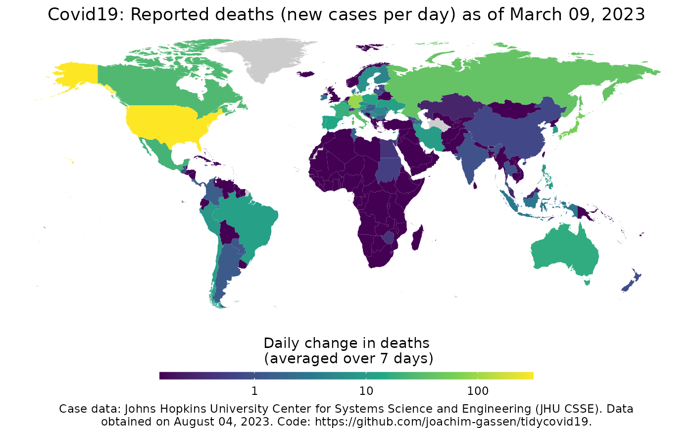
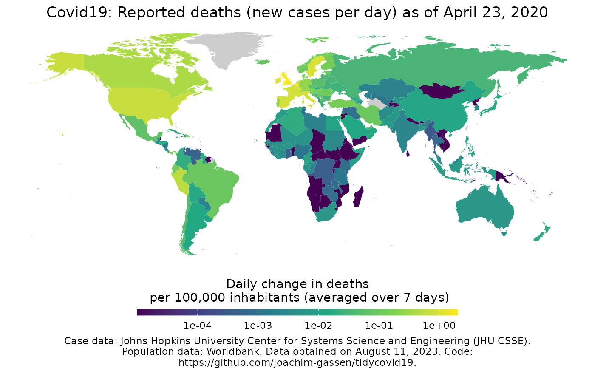

map_covid19.RdProvides a choropleth world map of the country-level Covid-19 spread. Uses data from the Johns Hopkins University CSSE team (https://github.com/CSSEGISandData/COVID-19) and the World Bank (https://data.worldbank.org). If called with multiple dates it uses the gganimate package to generate an ainmated display.
map_covid19( data = download_merged_data(cached = TRUE, silent = TRUE), type = "deaths", cumulative = FALSE, change_ave = 7, per_capita = FALSE, dates = max(data$date), diverging_color_scale = FALSE, region = "World", data_date_str = format(lubridate::as_date(data$timestamp[1]), "%B %d, %Y"), ... )
| data | The data frame to base the plot on. Should be a merged data
frame obtained by download_merged_data and defaults to
|
|---|---|
| type | The statistic that you want to plot. Needs to be either "confirmed", "deaths", "revovered" or "active", defined as the difference of "confirmed" and "recovered". |
| cumulative | If |
| change_ave | Number of days to average over when you plot daily changes. |
| per_capita | If |
| dates | The data date to use for the plot. Defaults to the most current
date present in the data. If you provide a vector of dates, it will
use the |
| diverging_color_scale | Should be set to |
| region | Do you want to map the world (default) or focus on a certain region? Valid values are either 'World', 'Africa', 'Asia', 'Europe', 'North America', 'Oceania', 'South America' or a named list (x,y) containing longitude and latidtude limits. |
| data_date_str | A date string to include in the annotation of the plot giving the time when the data was pulled. Defaults to the timestamp of the data. Note that you might run into issues with the default when running this in a non-english locale. Consider setting it by hand then. |
| ... | additional parameters that will passed on to
|
A ggplot2 or a
gganimate object.
map_covid19()merged <- download_merged_data(cached = TRUE, silent = TRUE) map_covid19(merged, per_capita = TRUE, date = "2020-04-23")# NOT RUN { # Create animation - takes a while to process anim <- map_covid19(merged, per_capita = T, dates = unique(merged_df$date)) # }